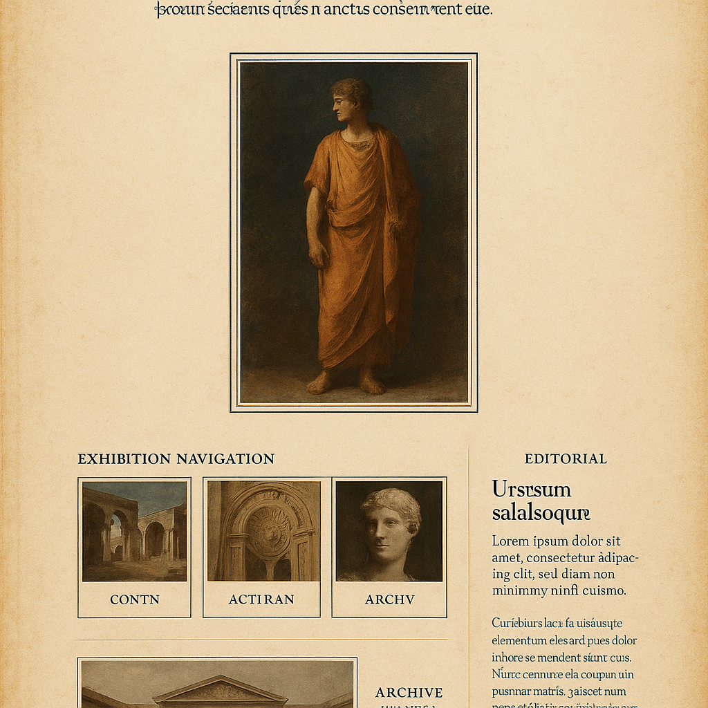

Home price
The median home price sets the scale of the challenge in each region.
Method page
This page slows down the mechanics behind the homepage. The project combines regional home prices, income, and mortgage assumptions so visitors can compare housing pressure instead of guessing.

The median home price sets the scale of the challenge in each region.
Income provides the baseline for comparing whether a market is even in range.
Rates shape the actual monthly cost, which is why the calculator and chatbot both expose them.
The chart gives a regional comparison. The calculator lets someone test their own assumptions. The chatbot lets the visitor ask the dataset questions in plain English. Together they cover scanning, experimenting, and asking.
That mix matters on GitHub Pages because the chatbot can still answer a strong set of local-first questions even when there is no live server behind the deployed site.
The goal is not to predict one future buyer. It is to make regional affordability easier to inspect, compare, and explain.
That is why the redesign keeps the interaction layer visible. The story earns trust; the tool lets the visitor test that trust.
Context page
Read the human and narrative rationale behind the question before returning to the tool.
Open the context pageProcess page
See how the teacher's scrollytelling workflow influenced the redesign and documentation structure.
Open the process pageStory return
Return to the main sequence and continue into the final scenes of the story.
Return to the story